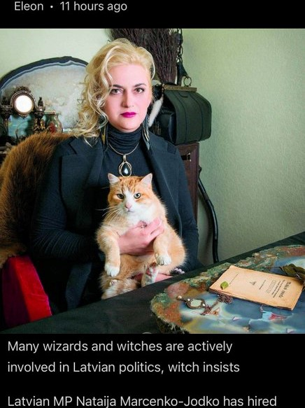
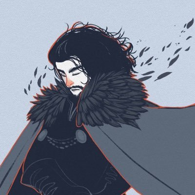
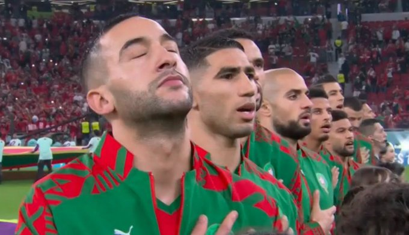

Home

اياد الحمود
@Eyaaaad . 23hنائبة في برلمان دولة لاتفيا وظّفت ساحرة اسمها "سانيتا بيتيري" لتعمل معها في البرلمان براتب شهري، وهي ساحرة شهيرة متخصصة في الشعوذة والطب غير التقليدي والطاقة. وعند سؤال النائبة قالت: ستساعدني الساحرة في فهم القضايا الاجتماعية والطالع ومعرفة هالة الجسم والتخلص من الطاقة السلبية.


محمد | ASOIAF
@kingsthenorth . 1h"صلّى عليكَ الله يا خَير الورى مَا أمطَرت مُزنٌ وما سَيلٌ جَرَى"ﷺ
اياد الحمود
@Eyaaaad . 23hبالتوفيق لأسود المغرب
